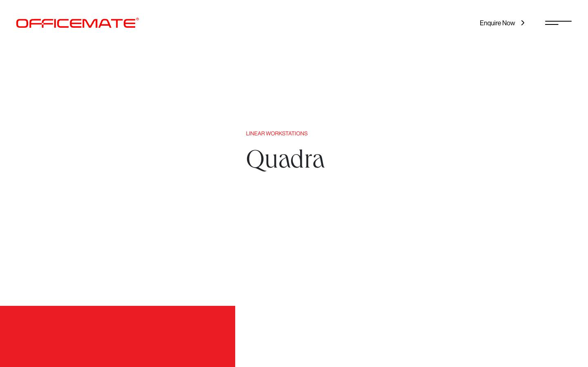
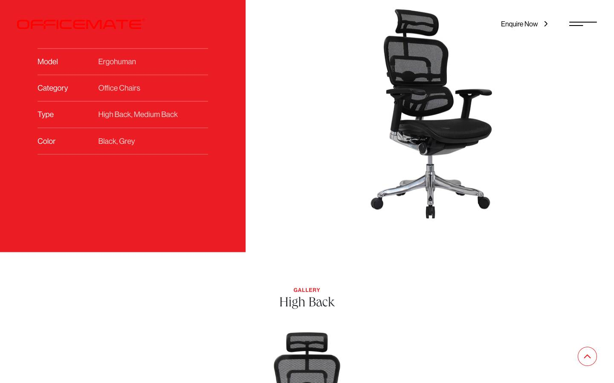
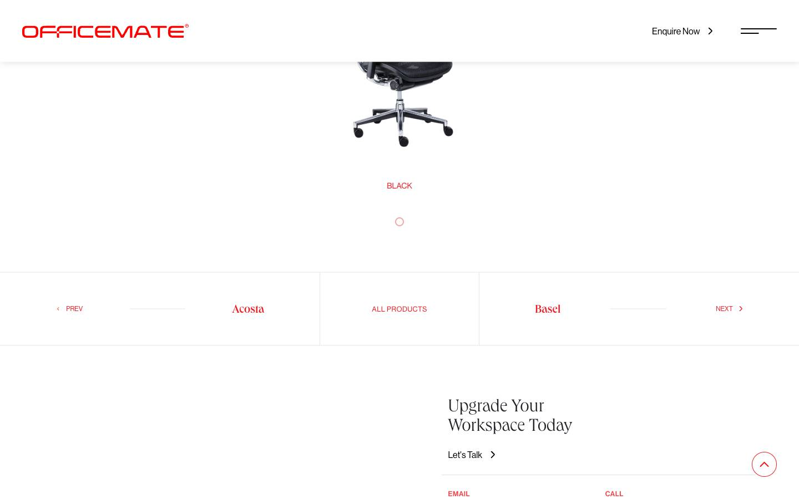
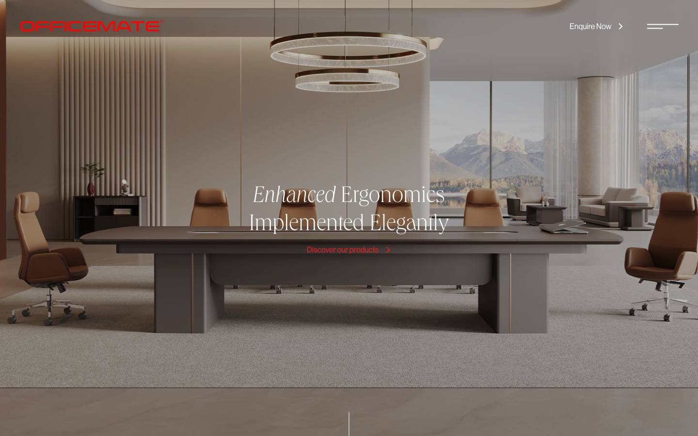
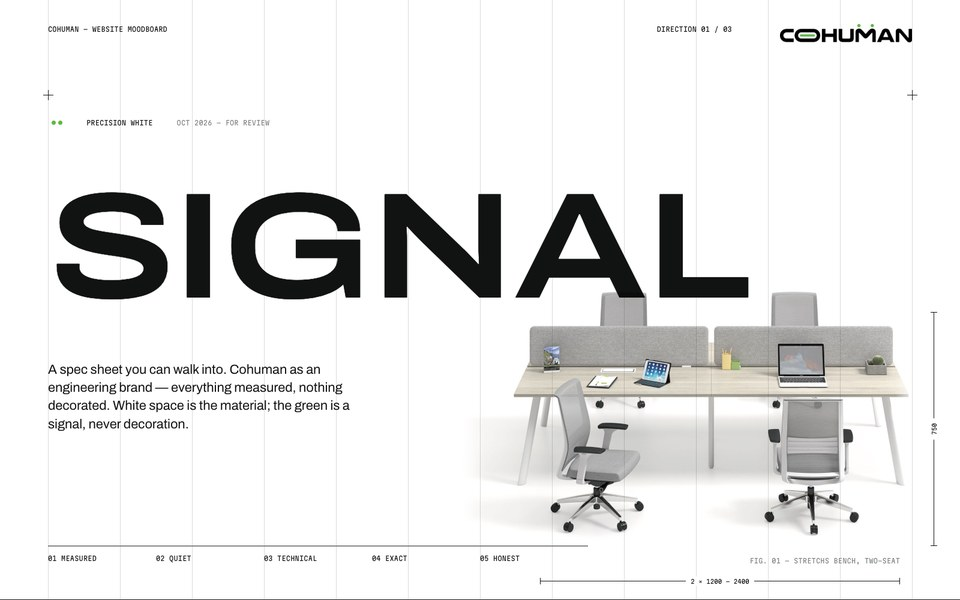
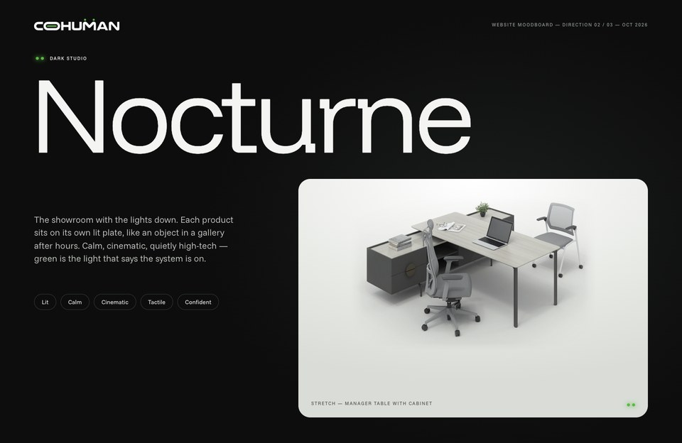
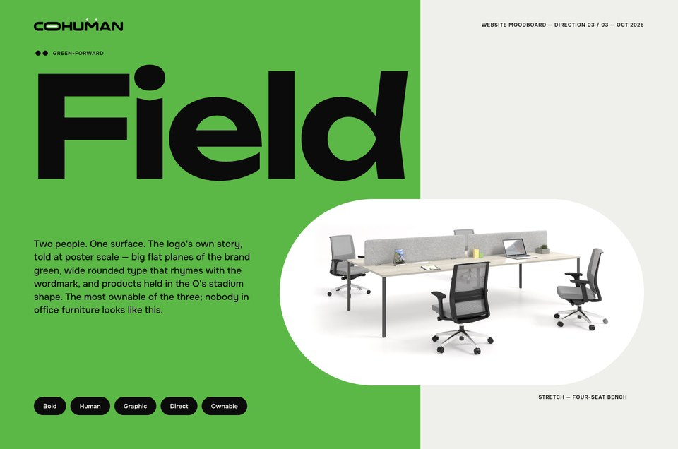

One logo. One product page.
Three ways to stand.
Three moodboards for the new Cohuman website, built from the new logo and its two colours. Each one keeps the product-page structure you liked on officemate.in and rethinks the homepage. Pick one to take forward — or tell us what you'd borrow from another.
What we took from officemate.in
We went through the homepage, the category pages and several product pages. The product page is the part worth keeping — its order of sections is clear and calm. The look around it is not ours.




Keep
- The product-page order: name hero → colour block with specs + cut-out → per-variant gallery → prev / all / next → enquiry.
- Products as studio cut-outs, never cropped, with plenty of space around them.
- One brand colour used as a big solid block, not sprinkled around.
- An "Enquire" action that is always in reach.
Leave behind
- Thin, light serif type. It reads "elegant"; the brief is strong and futuristic.
- Red, and the stock-interior hero with a generic tagline.
- The scroll-zoom collage and the client-logo wall — busy, and not what a new brand should lead with.
- Product pages with no sizes or configuration: ours quote by configuration × length × depth.
The same in all three
These don't change whichever direction is chosen — so the decision is purely about look, feel and homepage concept.
The three directions
Each moodboard covers the logo in context, palette, type, imagery, interface parts, a homepage concept and the product page.

Signal
A spec sheet you can walk into. White, ink and drawing marks; every product carries its real dimensions. Green appears only as a signal light.
- Feels like
- Measured, technical, quiet
- Type
- Archivo Expanded · Martian Mono
- Homepage
- A product index — one measured hero, every system as a row
- Best if
- You want to win on credibility with architects, designers and procurement teams.
- Watch-out
- Needs discipline; can feel cold if the photography is weak.

Nocturne
The showroom with the lights down. Dark warm-neutral page, each product on its own lit plate, green as the light that says "on".
- Feels like
- Cinematic, premium, high-tech
- Type
- Funnel Display · Funnel Sans
- Homepage
- A dark showroom — one big lit plate, systems on a rail beneath
- Best if
- You want a premium, car-configurator presence and to sell the showroom visit.
- Watch-out
- Dark sites demand excellent photography; less "daylight office" warmth.

Field
Two people. One surface. The logo's story at poster scale — big planes of green, wide rounded type, products held in the O's stadium shape.
- Feels like
- Bold, human, graphic
- Type
- Unbounded · Onest
- Homepage
- A poster — one green plane, one sentence, a band of system names
- Best if
- You want to be instantly recognisable and own the green outright.
- Watch-out
- The loudest of the three; lands fully only with commissioned people photography.
Side by side
The same decisions, answered three ways.
| 01 Signal | 02 Nocturne | 03 Field | |
|---|---|---|---|
| Page canvas | Pure white with a hairline grid | Carbon (warm near-black) | Chalk, with large green planes |
| How much green | ~1% — status only | ~2% — light, glow, one spec block | ~25% — the ground itself |
| Shape language | Square corners, 1px rules, dimension lines | Soft 28px plates, pill controls | Full stadiums (the O) and 32px blocks |
| Logo device used | Dots = status · bar = progress | Dots = LEDs · bar = light line | Dots = pairs · bar = black band · O = frame |
| Product page spec block | Ink (black) | Signal green | Field green, chalk page |
| Motion | Lines draw in like a plotter | Plates light up, slow light sweeps | Colour panels slide like doors |
| Photography needed | Studio cut-outs (have), high-key interiors | Studio cut-outs (have), evening-lit interiors | Studio cut-outs (have), new shoot of people at desks |
| Closest to officemate PDP | Same structure, cooler and more technical | Same structure, dark | Most literal — big colour block on a light page |
Choose a direction
Once one is picked we take it to high fidelity: the full homepage and one product page at desktop and mobile, built on the chosen palette, type and parts.
- 1 — Which direction feels most like Cohuman?
- 2 — Anything from the other two you'd want to borrow?
- 3 — Is there budget for a people photo shoot? (Field depends on it.)